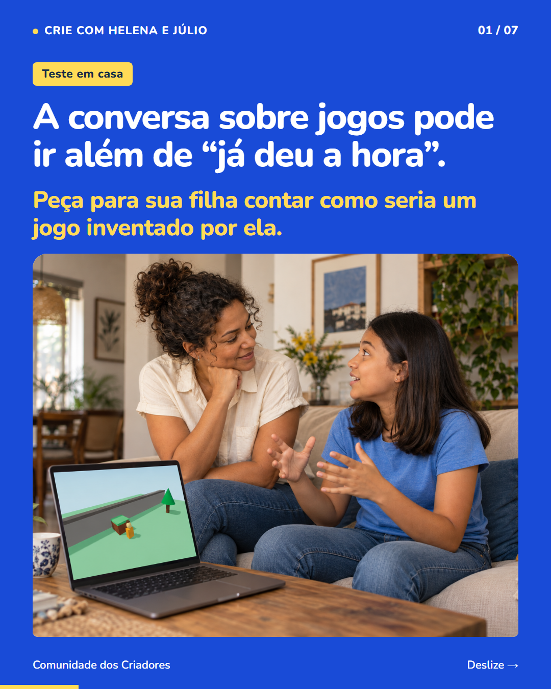
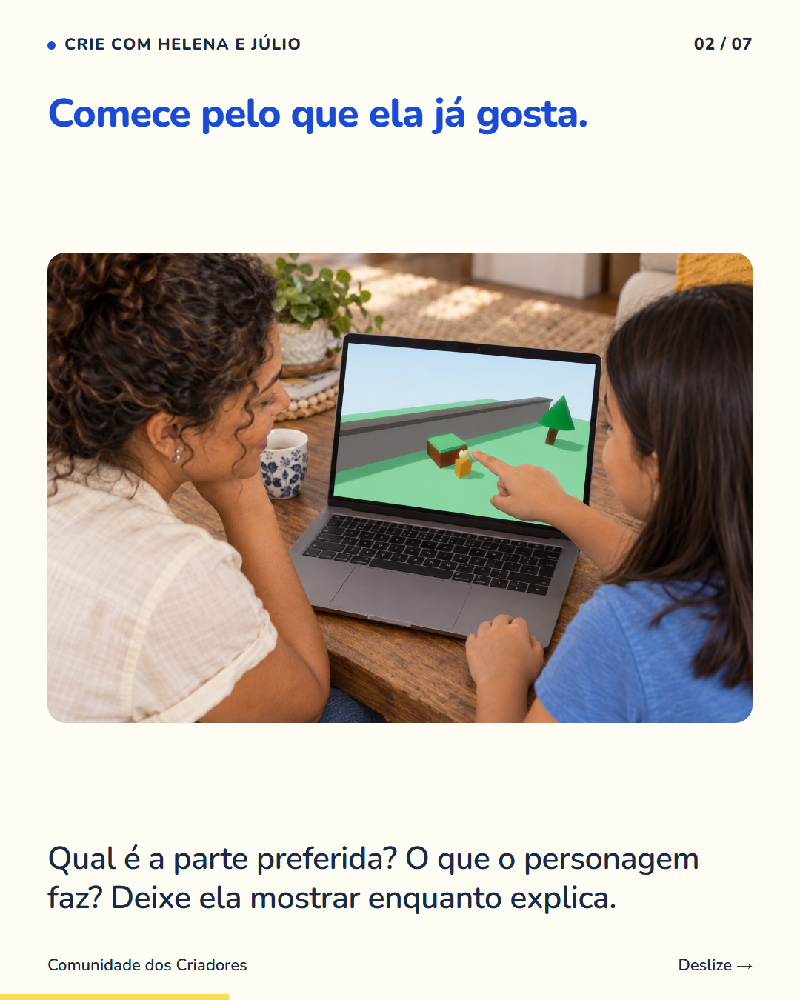
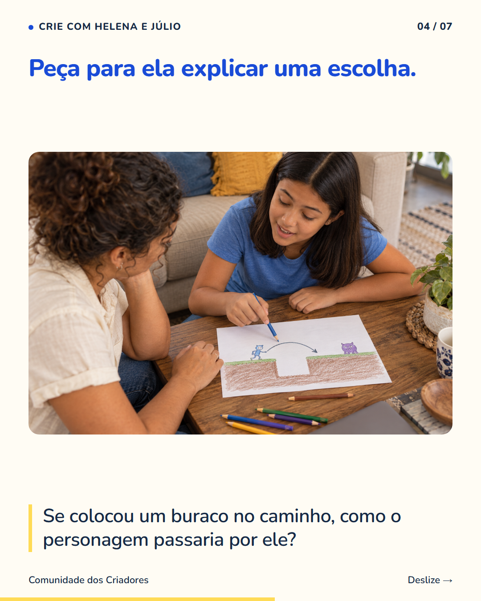
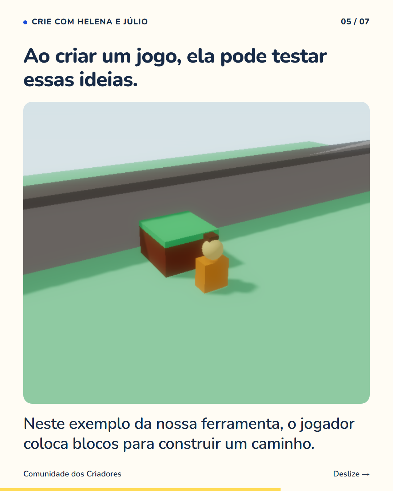
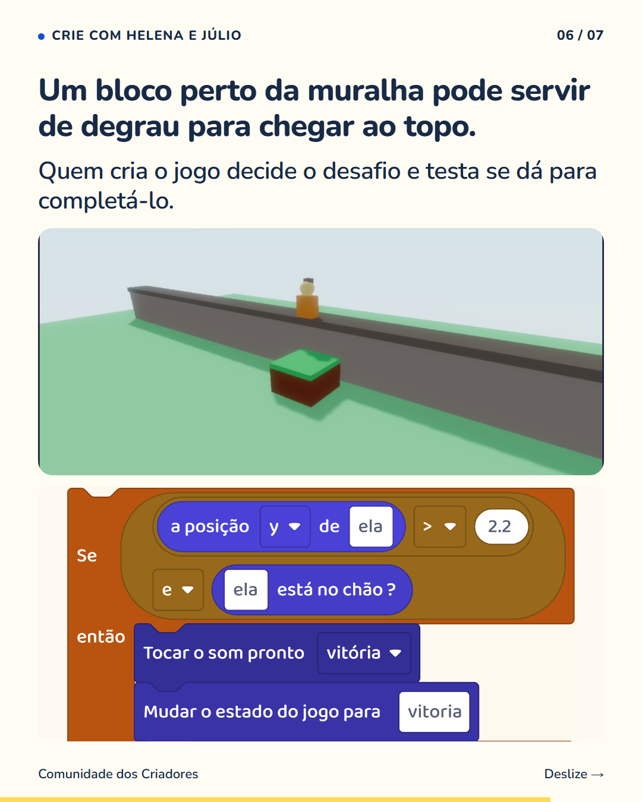

7 slides · 1080 × 1350 · Copy revisada · Conversa, desenho e criação





Você pode conversar sobre o jogo preferido da sua filha sem conhecer todas as regras. Peça para ela mostrar a parte de que mais gosta. Depois convide-a a imaginar uma fase própria. O que colocaria? Como alguém conseguiria passar? Escute as escolhas antes de sugerir as suas. Essa conversa já toca em decisões de quem cria jogos. Na nossa demonstração com blocos, o jogador constrói degraus para chegar ao topo de uma muralha. Foi preciso decidir onde os blocos entram e testar se o caminho funciona. Num projeto dela, sua filha pode experimentar escolhas assim e mostrar o resultado. Você ganha uma forma de participar de um interesse dela, além de combinar o tempo de uso. Siga @criecomhelenaejulio para descobrir mais conversas sobre a criação de jogos.